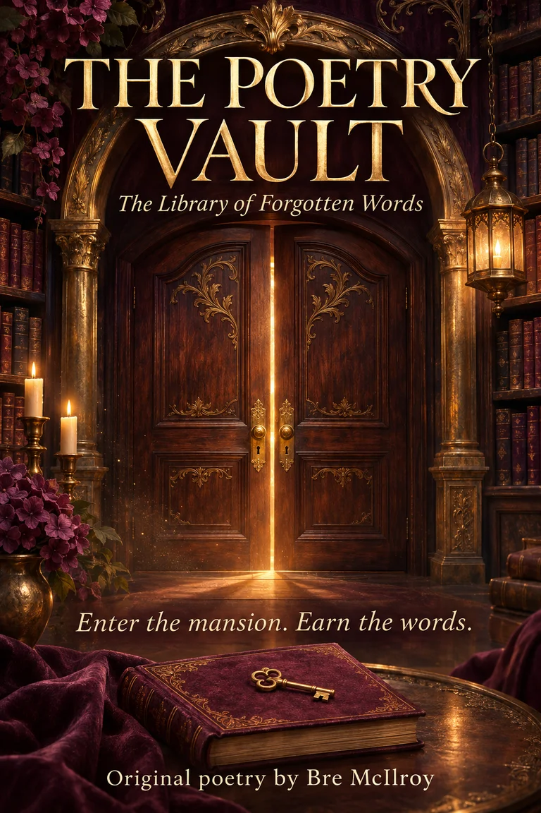

The Library of Forgotten Words
Some stories wait
behind locked doors.
Step into a Victorian library of love, reflection, midnight, and morning. Four chambers. Sixteen original poems. Every discovery is yours to earn.
Official cinematic teaser · 46 seconds
A glimpse beyond the doors
Original instrumental score and readable title cards. Spoiler-free room glimpses; no poem pages, hidden codes, or puzzle solutions. A female voiceover is planned but is not included in this version.
Read the trailer description
The doors of an ornate Victorian library lead to four mysterious spaces: a candlelit chamber, a mirrored room, an archive at midnight, and the conservatory at dawn. Title cards invite players to uncover sixteen original poems. Original poetry by Bre McIlroy.


Official poster
Enter the mansion.
Earn the words.
An immersive literary mystery inspired by Love, Pain & The Chaos in My Brain.
Explore at your pace, find the clues, and earn access to the poem collection, one room at a time. No countdown timer or score pressure.
Before you begin
Explore your way.
Use WASD or on-screen movement controls to walk. The object list lets you reach the same puzzles without 3D navigation.
Keep your place.
Progress saves locally in this browser. Return with the same browser and address; private browsing may delete progress.
Set the mood.
Audio is optional. Adjust effects and music in Settings; narrator playback depends on voices installed on your device.
Leave a trace
How did the story feel?
Share a spoiler-free thought, report an issue, or leave a note for Bre. Only messages explicitly approved for publication appear in the guestbook.
Feedback & guestbook →